Agrupamientos y Reducción de la Dimensionalidad
M. en C. Arturo Bell Enríquez García
Funciones personalizadas:
# Tema personalizado
blank_theme <- function(aspect.ratio = 1/1.61){
theme(panel.grid.minor = element_blank(),
panel.grid.major = element_blank(),
panel.background = element_blank(),
axis.line = element_blank(),
aspect.ratio = aspect.ratio,
axis.ticks = element_blank(),
text = element_text(colour = "gray50"), # Eliminar
legend.position = "none"
)
}
# Función para la estimación de los CP óptimos:
evplot <- function(ev){
# Broken stick model (MacArthur 1957)
n <- length(ev)
bsm <- data.frame(j=seq(1:n), p=0)
bsm$p[1] <- 1/n
for (i in 2:n) bsm$p[i] <- bsm$p[i-1] + (1/(n + 1 - i))
bsm$p <- 100*bsm$p/n
# Plot eigenvalues and % of variation for each axis
op <- par(mfrow=c(2,1))
barplot(ev, main="Eigenvalues", col="bisque", las=2)
abline(h=mean(ev), col="red")
legend("topright", "Average eigenvalue", lwd=1, col=2, bty="n")
barplot(t(cbind(100*ev/sum(ev), bsm$p[n:1])), beside=TRUE,
main="% variation", col=c("bisque",2), las=2)
legend("topright", c("% eigenvalue", "Broken stick model"),
pch=15, col=c("bisque",2), bty="n")
par(op)
}Agrupamiento jerárquico (clúster)
Realizar un agrupamiento jerárquico en R es bastante sencillo, únicamente debemos de tener nuestro data.frame cuyos nombres de renglones sean las etiquetas de nuestras instancias a agrupar, calcular las distancias con la función dist(x, method) y unir los grupos con la función hclust(dist, method).
library(vegan, quietly = T)
df1 <- data.frame(long = c(3, 3.6, 6.5, 7.5, 15, 20), row.names = c("Tt", "Gg", "Gm", "Oo", "Mn", "Bp"))
dist.mat <- dist(df1, method = "euclidean")
hc.av <- hclust(dist.mat, method ="average")Si graficamos este objeto tendremos un dendrograma muy sencillo:
library(ggplot2, quietly = T)
library(ggdendro, quietly = T)
ggdendrogram(hc.av, labels = T)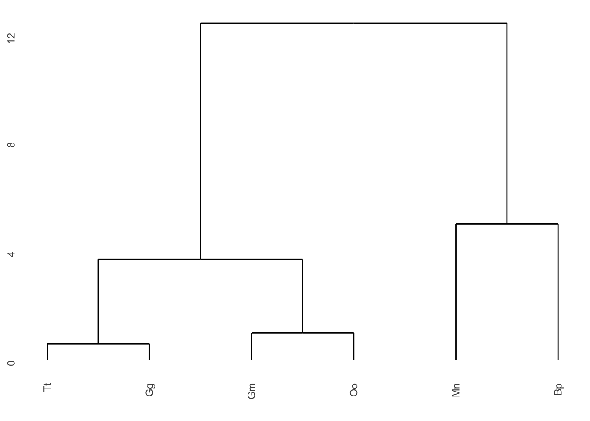 Podemos personalizar el dendrograma utilizando la función set(object, what, value) de la librería dendextend:
library(dendextend)
# Primero transformemos nuestro objeto a un dendrograma:
dend <- as.dendrogram(hc.av)
# Cambiemos el color a las ramas:
dend <- set(dend, "branches_k_color",
value = "deepskyblue4",
k = 1)
#dend <- set(dend, "branches_k_color",
# value = c(rgb(0,118, 186, maxColorValue = 255),
# rgb(0, 123, 118, maxColorValue = 255),
# rgb(255, 147, 0, maxColorValue = 255),
# rgb(181, 23, 0, maxColorValue = 255)),
# k = 4)
dend <- set(dend, "branches_lwd", 1)
# Cambiemos el color de las etiquetas:
dend <- set(dend, "labels_col",
value = c(rgb(0,118, 186, maxColorValue = 255),
rgb(0, 123, 118, maxColorValue = 255),
rgb(255, 147, 0, maxColorValue = 255),
rgb(181, 23, 0, maxColorValue = 255)),
k = 4)
# Graficador base de R:
plot(dend)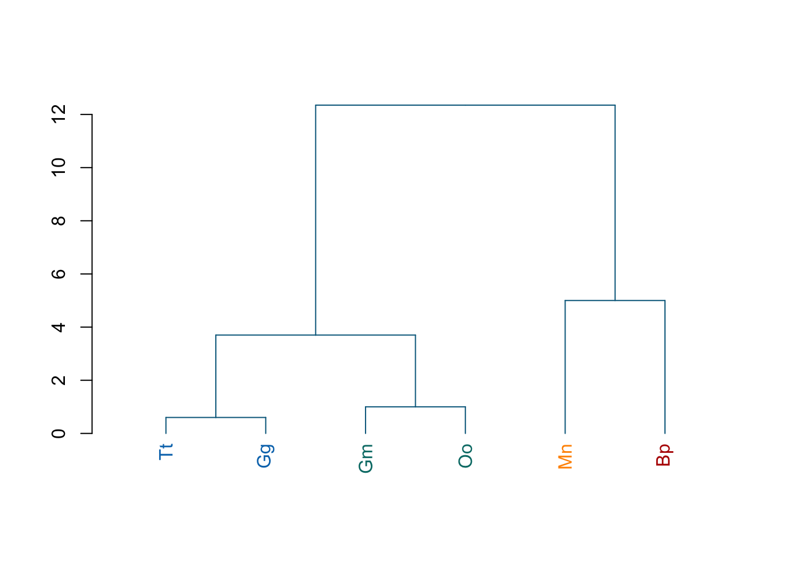 Por homogeneidad con el resto del curso, grafiquémoslo utilizando ggplot2:
ggd1 <- as.ggdend(dend)
ggd1.plot <- ggplot(ggd1, offset_labels = -1, theme = blank_theme()) +
ylim(-2.4, max(get_branches_heights(dend))) +
scale_x_continuous(breaks = NULL) +
labs(title = "Dendrograma de especies de cetáceos",
subtitle = "Agrupamientos por longitud (método: promedio)",
x = element_blank(),
y = "Distancia euclidiana",
caption = "Datos de bit.ly/clust_medium")
ggd1.plot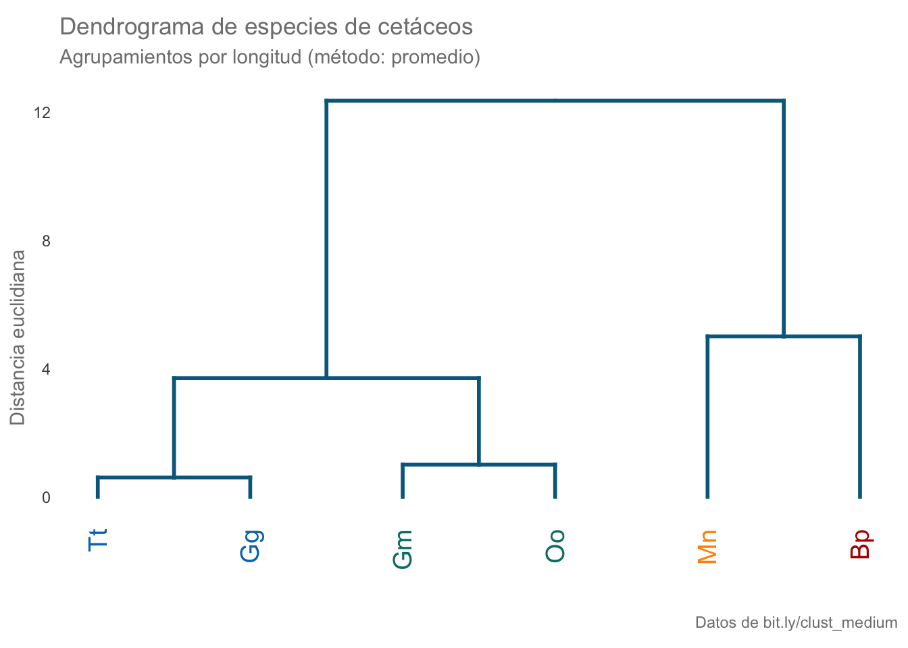 ## Ejercicio Mv Habiendo comprendido cómo funciona el análisis de agrupamientos, apliquémoslo a una base de datos multivariada (cluster.txt), la cual consiste en mediciones de variables ambientales en distintos sitios de muestreo y el objetivo es agrupar aquellos que tengan características similares. En el resumen podemos ver que hay diferencias muy importantes en las escalas de las variables, por lo cual será necesario escalar los datos.
clust.df <- read.table("data/cluster.txt", header = T, row.names = 1) # ¡OJO con row.names!
summary(clust.df)## Temp NH4 NO3 OD Prof
## Min. :16.90 Min. :0.540 Min. :0.400 Min. :0.810 Min. : 27
## 1st Qu.:18.20 1st Qu.:0.900 1st Qu.:1.830 1st Qu.:2.650 1st Qu.: 76
## Median :19.60 Median :0.980 Median :2.500 Median :3.800 Median :122
## Mean :20.31 Mean :1.047 Mean :2.394 Mean :4.103 Mean :109
## 3rd Qu.:21.40 3rd Qu.:1.250 3rd Qu.:3.120 3rd Qu.:5.840 3rd Qu.:148
## Max. :25.80 Max. :1.570 Max. :4.210 Max. :8.010 Max. :199
## Trans Caud SST STD
## Min. : 4.00 Min. : 0.520 Min. : 4.0 Min. : 86.9
## 1st Qu.: 6.00 1st Qu.: 1.960 1st Qu.: 50.0 1st Qu.:101.5
## Median :10.00 Median : 5.580 Median : 134.0 Median :104.3
## Mean :17.62 Mean : 5.877 Mean : 254.3 Mean :108.7
## 3rd Qu.:18.00 3rd Qu.: 8.100 3rd Qu.: 298.7 3rd Qu.:113.7
## Max. :56.00 Max. :15.440 Max. :1163.3 Max. :137.7
## PO4 DBO5 DQO
## Min. :0.000 Min. :20.21 Min. : 5.00
## 1st Qu.:0.250 1st Qu.:21.29 1st Qu.:16.00
## Median :0.400 Median :23.27 Median :32.00
## Mean :0.391 Mean :27.45 Mean :32.52
## 3rd Qu.:0.600 3rd Qu.:32.62 3rd Qu.:50.00
## Max. :0.870 Max. :59.82 Max. :62.00Otro problema, tal vez no tan evidente, es que la distribución de SST se encuentra sumamente sesgada, por lo que habrá que a) aplicar una transformación para normalizar los datos, b) retirarla del análisis. Tomando en cuenta los valores, es bastante probable que las mediciones estén equivocadas, por lo que la retiraremos del análisis.
mask <- colnames(clust.df)[colnames(clust.df) != "SST"]
clust.filt <- clust.df[,mask]
colnames(clust.filt)## [1] "Temp" "NH4" "NO3" "OD" "Prof" "Trans" "Caud" "STD" "PO4"
## [10] "DBO5" "DQO"Ahora escalemos todos nuestros datos. Al analizar rápidamente la distribución de cada una de las variables podemos ver que hay algunas con sesgos que pudieran ser importantes; sin embargo, podemos utilizar una medida de distancia que contienda con este tipo de distribuciones para evitar una transformación más agresiva que el escalamiento.
clust.scale <- scale(clust.filt)
#clust.scale <- log(clust.filt +1) # Si de todos modos deseas aplicar una transformación para "normalizar" los datos.
summary(clust.scale)## Temp NH4 NO3 OD
## Min. :-1.315 Min. :-1.8357 Min. :-1.9515 Min. :-1.4896
## 1st Qu.:-0.814 1st Qu.:-0.5326 1st Qu.:-0.5518 1st Qu.:-0.6573
## Median :-0.275 Median :-0.2430 Median : 0.1039 Median :-0.1370
## Mean : 0.000 Mean : 0.0000 Mean : 0.0000 Mean : 0.0000
## 3rd Qu.: 0.418 3rd Qu.: 0.7343 3rd Qu.: 0.7108 3rd Qu.: 0.7859
## Max. : 2.112 Max. : 1.8926 Max. : 1.7776 Max. : 1.7675
## Prof Trans Caud STD
## Min. :-1.5885 Min. :-0.8294 Min. :-1.19044 Min. :-1.4307
## 1st Qu.:-0.6393 1st Qu.:-0.7076 1st Qu.:-0.87045 1st Qu.:-0.4734
## Median : 0.2518 Median :-0.4640 Median :-0.06603 Median :-0.2898
## Mean : 0.0000 Mean : 0.0000 Mean : 0.00000 Mean : 0.0000
## 3rd Qu.: 0.7555 3rd Qu.: 0.0232 3rd Qu.: 0.49395 3rd Qu.: 0.3266
## Max. : 1.7435 Max. : 2.3373 Max. : 2.12502 Max. : 1.9003
## PO4 DBO5 DQO
## Min. :-1.45097 Min. :-0.7880 Min. :-1.43661
## 1st Qu.:-0.52313 1st Qu.:-0.6704 1st Qu.:-0.86246
## Median : 0.03358 Median :-0.4548 Median :-0.02734
## Mean : 0.00000 Mean : 0.0000 Mean : 0.00000
## 3rd Qu.: 0.77585 3rd Qu.: 0.5631 3rd Qu.: 0.91217
## Max. : 1.77792 Max. : 3.5244 Max. : 1.53851Ahora realicemos los agrupamientos. Utilizaremos la distancia Mahalanobis ya que esta no es tan sensible a los valores extremos. El método de agrupamiento será ward.D2, (distancias cuadráticas) para minimizar la varianza intra-grupos:
dist.mv1 <- vegdist(clust.scale, method = "mahalanobis")
hc.mv1 <- hclust(dist.mv1, method ="ward.D2")
# Transformemos nuestro objeto a un dendrograma:
dend.mv1 <- as.dendrogram(hc.mv1)
# Cambiemos el color a las ramas:
dend.mv1 <- set(dend.mv1, "branches_k_color",
value = "deepskyblue4",
k = 1)
dend.mv1 <- set(dend.mv1, "branches_lwd", 0.7)
ggd1 <- as.ggdend(dend.mv1)
ggd1.plot <- ggplot(ggd1, offset_labels = -1, theme = blank_theme()) +
expand_limits(y = -2.4) +
scale_x_continuous(breaks = NULL) +
scale_y_continuous(breaks = seq(0,max(get_branches_heights(dend.mv1)),2)) +
labs(title = "Dendrograma de sitios de muestreo",
subtitle = "Método de agrupamiento: Ward.D2",
x = element_blank(),
y = "Distancia Mahalanobis",
caption = "Datos: clust.txt")
ggd1.plot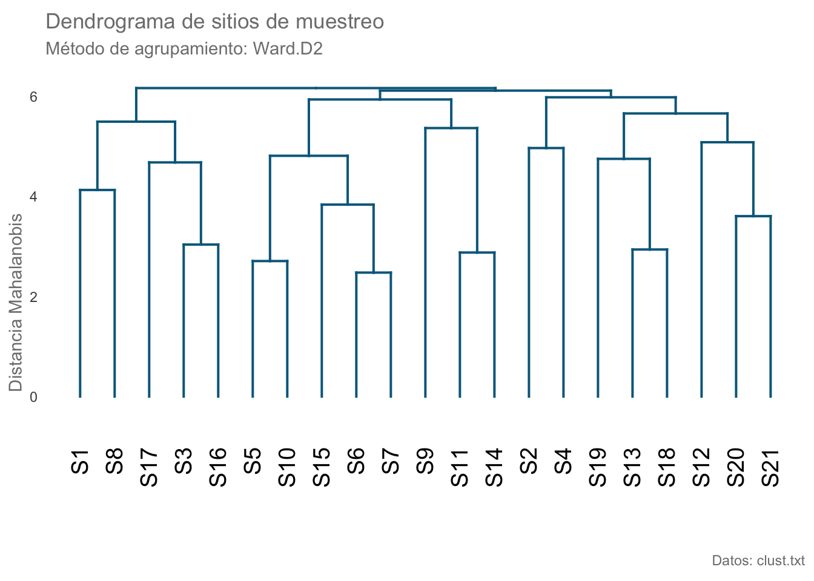 Los agrupamientos con esa combinación de distancia y método de agrupamiento no son claros, veamos qué pasa si consideramos la distancia euclidiana:
dist.mv2 <- vegdist(clust.scale, method = "euclidean")
hc.mv2 <- hclust(dist.mv2, method ="ward.D2")
# Transformemos nuestro objeto a un dendrograma:
dend.mv2 <- as.dendrogram(hc.mv2)
# Cambiemos el color a las ramas:
dend.mv2 <- set(dend.mv2, "branches_k_color",
value = "deepskyblue4",
k = 1)
dend.mv2 <- set(dend.mv2, "branches_lwd", 0.7)
ggd2 <- as.ggdend(dend.mv2)
ggd2.plot <- ggplot(ggd2, offset_labels = -1, theme = blank_theme()) +
expand_limits(y = -2.4) +
scale_x_continuous(breaks = NULL) +
scale_y_continuous(breaks = seq(0,max(get_branches_heights(dend.mv2)),2)) +
labs(title = "Dendrograma de sitios de muestreo",
subtitle = "Método de agrupamiento: Ward.D2",
x = element_blank(),
y = "Distancia Euclidiana",
caption = "Datos: clust.txt")
ggd2.plot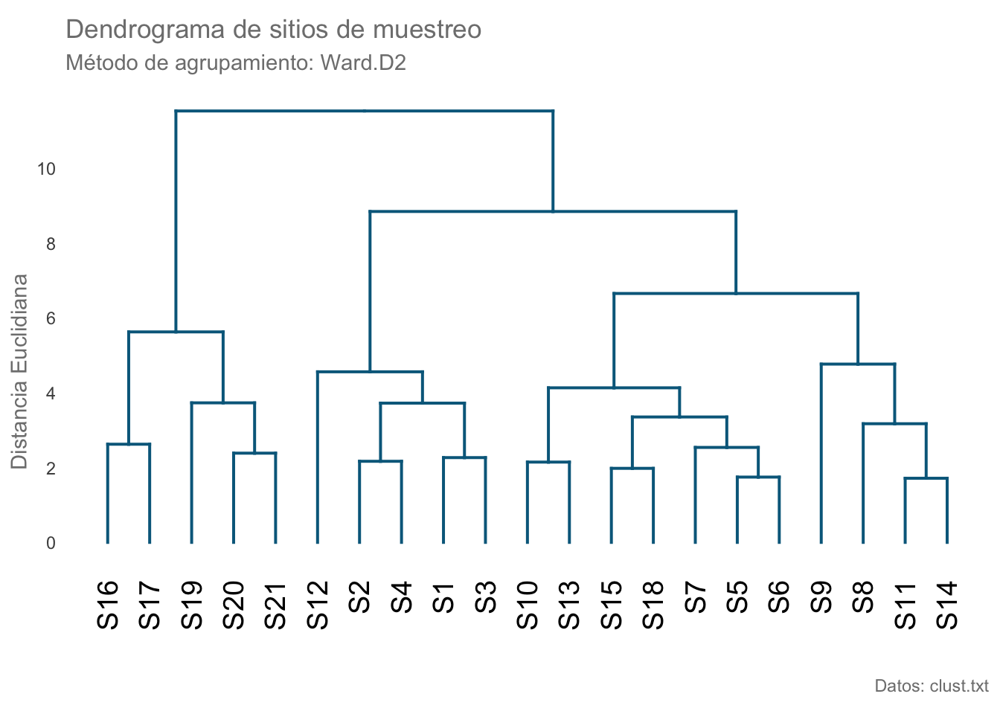 ¿Y la distancia Manhattan? Las agrupaciones resultantes son similares; sin embargo, las medidas de distancia son muy diferentes. Utilicemos el caso anterior para evaluar las agrupaciones.
dist.mv3 <- vegdist(clust.scale, method = "manhattan")
hc.mv3 <- hclust(dist.mv3, method ="ward.D2")
# Transformemos nuestro objeto a un dendrograma:
dend.mv3 <- as.dendrogram(hc.mv3)
# Cambiemos el color a las ramas:
dend.mv3 <- set(dend.mv3, "branches_k_color",
value = "deepskyblue4",
k = 1)
dend.mv3 <- set(dend.mv3, "branches_lwd", 0.7)
ggd3 <- as.ggdend(dend.mv3)
ggd3.plot <- ggplot(ggd3, offset_labels = -1, theme = blank_theme()) +
expand_limits(y = -3.5) +
scale_x_continuous(breaks = NULL) +
scale_y_continuous(breaks = seq(0,max(get_branches_heights(dend.mv3)),5)) +
labs(title = "Dendrograma de sitios de muestreo",
subtitle = "Método de agrupamiento: Ward.D2)",
x = element_blank(),
y = "Distancia Manhattan",
caption = "Datos: clust.txt")
ggd3.plot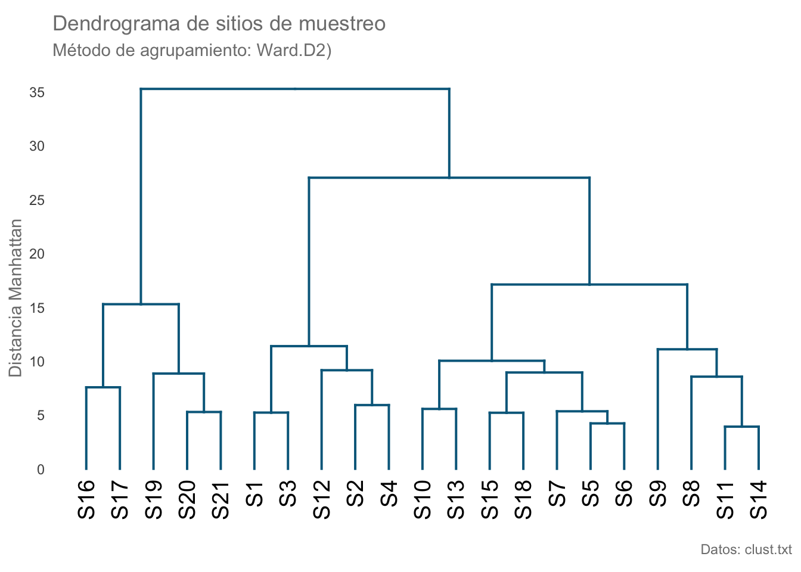 ### Evaluación de los agrupamientos Para calcular los índices que estiman el número óptimo de agrupaciones utilizaremos la función NbClust de la librería con el mismo nombre.
library(NbClust)
res <- NbClust(clust.scale, diss = NULL, distance = "euclidean", method = "ward.D2", index = "all", max.nc = 8)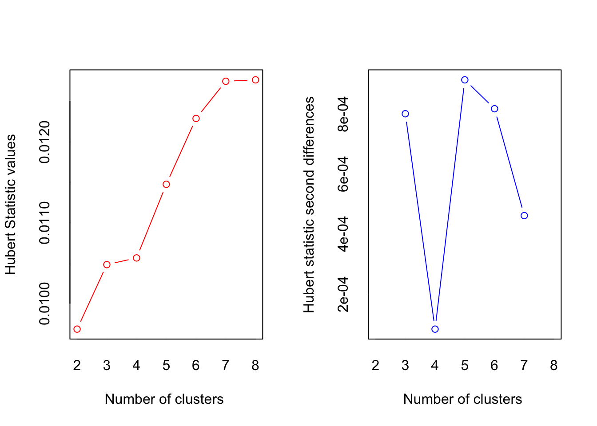
## *** : The Hubert index is a graphical method of determining the number of clusters.
## In the plot of Hubert index, we seek a significant knee that corresponds to a
## significant increase of the value of the measure i.e the significant peak in Hubert
## index second differences plot.
## 
## *** : The D index is a graphical method of determining the number of clusters.
## In the plot of D index, we seek a significant knee (the significant peak in Dindex
## second differences plot) that corresponds to a significant increase of the value of
## the measure.
##
## *******************************************************************
## * Among all indices:
## * 4 proposed 2 as the best number of clusters
## * 11 proposed 3 as the best number of clusters
## * 1 proposed 5 as the best number of clusters
## * 2 proposed 7 as the best number of clusters
## * 5 proposed 8 as the best number of clusters
##
## ***** Conclusion *****
##
## * According to the majority rule, the best number of clusters is 3
##
##
## *******************************************************************Veamos ahora los grupos y calculemos el coeficiente de correlación cofenético. Una correlación de prácticamente el 70% es más que aceptable, si consideramos que no filtramos la totalidad de los datos. Como dato curioso, al aplicar una transformación logarítmica se mantienen estos grupos pero el coeficiente de correlación cofenético se eleva a 0.8.
res$Best.partition## S1 S2 S3 S4 S5 S6 S7 S8 S9 S10 S11 S12 S13 S14 S15 S16 S17 S18 S19 S20
## 1 1 1 1 2 2 2 2 2 2 2 1 2 2 2 3 3 2 3 3
## S21
## 3hc.e <- cluster::agnes(dist.mv2, diss = T, method = "ward")
ccc <- cophenetic(hc.e) # Distancias en el dendrograma
ccofen <- cor(dist.mv2, ccc, method = "spearman") # Correlación entre distancias reales y graficadas
ccofen## [1] 0.6868661Esta forma de ver los agrupamientos no es muy clara, entonces agreguémosla a nuestro gráfico mediante colores de las ramas y etiquetas:
# Cambiamos el color de nuestr
dend.mv2 <- set(dend.mv2, "labels_col",
value = 1:3,
k = 3)
dend.mv2 <- set(dend.mv2, "branches_k_color",
value = 1:3,
k = 3)
dend.mv2 <- set(dend.mv2, "branches_lwd", 0.7)
ggd2 <- as.ggdend(dend.mv2)
ggd2.plot <- ggplot(ggd2, offset_labels = -1, theme = blank_theme()) +
expand_limits(y = -2.4) +
scale_x_continuous(breaks = NULL) +
scale_y_continuous(breaks = seq(0,max(get_branches_heights(dend.mv2)),2)) +
labs(title = "Dendrograma de sitios de muestreo",
subtitle = "Método de agrupamiento: Ward.D2",
x = element_blank(),
y = "Distancia Euclidiana",
caption = "Datos: clust.txt")
ggd2.plot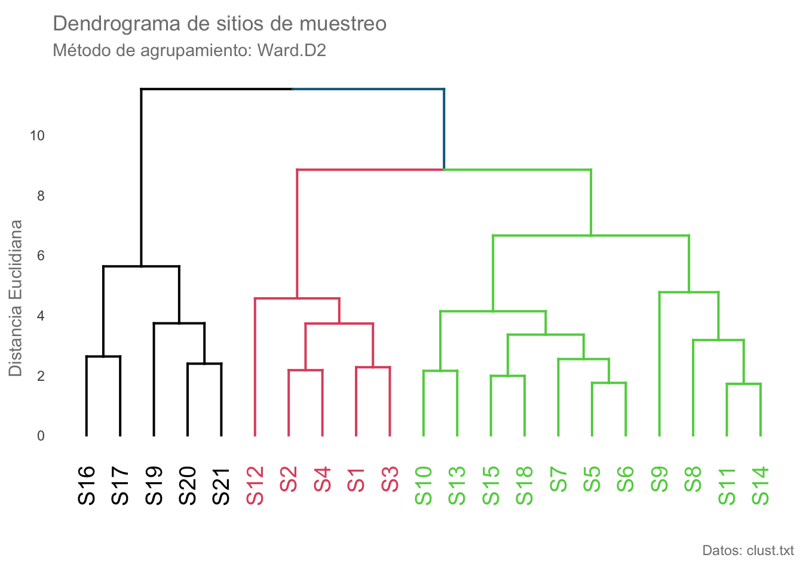
Guardado de figuras!!!
#cairo_pdf("dendrogram.pdf", width = 8, height = 8)
ggd2.plot
#dev.off()¿Cómo lo interpretamos? Hay que revisar la base de datos para evitar caer en interpretaciones incorrectas y analizar qué características conforman cada grupo.
Análisis de Componentes Principales
Por fin llegó la hora de hablar del Análisis de Componentes Principales. Vimos que esta técnica nos permite aproximar nuestros datos multivariados utilizando nuevas variables llamadas Componentes Principales, las cuales son ortogonales (independientes) entre sí. Apliquemos el Análisis de componentes principales a una base de datos con una gran cantidad de variables:
library(factoextra)
library(FactoMineR)
#Base de datos completa
x1n <- read.table('data/Medidas.txt', header = TRUE)
#Base de datos sin nombres de especies
x1 <- x1n[ ,2:length(x1n) ]
summary(x1)## furcal base radio alto
## Min. :0.2527 Min. :0.07088 Min. :0.04408 Min. :0.05319
## 1st Qu.:0.2716 1st Qu.:0.09108 1st Qu.:0.06748 1st Qu.:0.06709
## Median :0.2753 Median :0.09679 Median :0.07090 Median :0.07140
## Mean :0.2757 Mean :0.09645 Mean :0.07048 Mean :0.07116
## 3rd Qu.:0.2801 3rd Qu.:0.10142 3rd Qu.:0.07430 3rd Qu.:0.07534
## Max. :0.3202 Max. :0.11394 Max. :0.08311 Max. :0.09723
## gordo angos ojo X1erarc
## Min. :0.02679 Min. :0.02996 Min. :0.02142 Min. :0.03485
## 1st Qu.:0.04139 1st Qu.:0.03465 1st Qu.:0.02451 1st Qu.:0.04332
## Median :0.04402 Median :0.03577 Median :0.02673 Median :0.05129
## Mean :0.04405 Mean :0.03616 Mean :0.02740 Mean :0.05158
## 3rd Qu.:0.04680 3rd Qu.:0.03745 3rd Qu.:0.02875 3rd Qu.:0.05899
## Max. :0.05859 Max. :0.04727 Max. :0.08191 Max. :0.07738
## dist. largo cabez hueso
## Min. :0.007179 Min. :0.004202 Min. :0.07311 Min. :0.02857
## 1st Qu.:0.030485 1st Qu.:0.022402 1st Qu.:0.08476 1st Qu.:0.03236
## Median :0.035368 Median :0.029488 Median :0.08951 Median :0.03415
## Mean :0.031366 Mean :0.026533 Mean :0.08860 Mean :0.03488
## 3rd Qu.:0.038824 3rd Qu.:0.034574 3rd Qu.:0.09284 3rd Qu.:0.03582
## Max. :0.048008 Max. :0.051843 Max. :0.09815 Max. :0.10411
## mandib hueso.1 arriba cabeza
## Min. :0.03141 Min. :0.02348 Min. :0.01855 Min. :0.07118
## 1st Qu.:0.03598 1st Qu.:0.03917 1st Qu.:0.02546 1st Qu.:0.08309
## Median :0.03980 Median :0.04413 Median :0.02952 Median :0.08796
## Mean :0.03923 Mean :0.04498 Mean :0.02946 Mean :0.08890
## 3rd Qu.:0.04247 3rd Qu.:0.04995 3rd Qu.:0.03391 3rd Qu.:0.09483
## Max. :0.04758 Max. :0.08783 Max. :0.03828 Max. :0.10760
## boca abiert cachete largo.1
## Min. :0.02828 Min. :0.01810 Min. :0.02938 Min. :0.008724
## 1st Qu.:0.03476 1st Qu.:0.02348 1st Qu.:0.03911 1st Qu.:0.012881
## Median :0.03830 Median :0.02531 Median :0.04308 Median :0.014240
## Mean :0.03954 Mean :0.02547 Mean :0.04237 Mean :0.014366
## 3rd Qu.:0.04368 3rd Qu.:0.02741 3rd Qu.:0.04508 3rd Qu.:0.015936
## Max. :0.05552 Max. :0.03248 Max. :0.06553 Max. :0.026475
## ancho orificio densi hocic
## Min. :0.00274 Min. :0.01968 Min. :0.6990 Min. :0.01546
## 1st Qu.:0.02663 1st Qu.:0.03741 1st Qu.:0.7782 1st Qu.:0.02491
## Median :0.03031 Median :0.04381 Median :0.8451 Median :0.02929
## Mean :0.03253 Mean :0.04429 Mean :0.8401 Mean :0.02937
## 3rd Qu.:0.03447 3rd Qu.:0.05085 3rd Qu.:0.9031 3rd Qu.:0.03294
## Max. :0.22628 Max. :0.07390 Max. :1.1139 Max. :0.04922
## interbr ojoatra proye base.1
## Min. :0.007687 Min. :0.02685 Min. :0.007313 Min. :0.01546
## 1st Qu.:0.014457 1st Qu.:0.03796 1st Qu.:0.013341 1st Qu.:0.02052
## Median :0.015776 Median :0.04050 Median :0.014982 Median :0.02238
## Mean :0.016304 Mean :0.04067 Mean :0.016217 Mean :0.02300
## 3rd Qu.:0.017609 3rd Qu.:0.04256 3rd Qu.:0.016613 3rd Qu.:0.02474
## Max. :0.028804 Max. :0.08124 Max. :0.127873 Max. :0.04476
## altura area Intesti
## Min. :0.02514 Min. :0.001431 Min. :0.1295
## 1st Qu.:0.03815 1st Qu.:0.006723 1st Qu.:0.1774
## Median :0.04422 Median :0.009716 Median :0.1960
## Mean :0.04474 Mean :0.010638 Mean :0.1980
## 3rd Qu.:0.04928 3rd Qu.:0.014274 3rd Qu.:0.2150
## Max. :0.08398 Max. :0.027268 Max. :0.3246Apliquemos el Análisis de Componentes Principales:
res.pca <- FactoMineR::PCA(x1, graph = F, ncp = length(x1), scale.unit = T) #Aplicamos el ACP con los datos escalados y centrados
var <- get_pca_var(res.pca) # Extraemos las correlaciones de cada variable con cada componente principal
cors <- (round(abs(var$coord),2))
cors## Dim.1 Dim.2 Dim.3 Dim.4 Dim.5 Dim.6 Dim.7 Dim.8 Dim.9 Dim.10 Dim.11
## furcal 0.17 0.11 0.22 0.25 0.09 0.37 0.37 0.34 0.43 0.31 0.19
## base 0.08 0.08 0.32 0.02 0.15 0.46 0.19 0.41 0.35 0.02 0.45
## radio 0.29 0.05 0.25 0.33 0.43 0.31 0.07 0.13 0.24 0.20 0.38
## alto 0.13 0.32 0.44 0.45 0.48 0.04 0.14 0.09 0.08 0.05 0.03
## gordo 0.24 0.26 0.50 0.28 0.44 0.11 0.17 0.14 0.06 0.09 0.22
## angos 0.19 0.42 0.16 0.43 0.37 0.18 0.15 0.01 0.07 0.06 0.29
## ojo 0.16 0.21 0.06 0.14 0.18 0.43 0.25 0.17 0.28 0.52 0.33
## X1erarc 0.76 0.28 0.00 0.00 0.23 0.02 0.16 0.04 0.04 0.05 0.05
## dist. 0.44 0.29 0.15 0.30 0.01 0.46 0.29 0.24 0.24 0.20 0.21
## largo 0.65 0.36 0.22 0.30 0.01 0.26 0.17 0.08 0.25 0.20 0.15
## cabez 0.58 0.49 0.12 0.22 0.29 0.16 0.22 0.08 0.07 0.04 0.19
## hueso 0.02 0.17 0.32 0.45 0.06 0.31 0.46 0.19 0.04 0.07 0.06
## mandib 0.83 0.36 0.03 0.06 0.00 0.03 0.05 0.05 0.11 0.01 0.08
## hueso.1 0.30 0.02 0.42 0.65 0.16 0.03 0.29 0.22 0.06 0.10 0.04
## arriba 0.79 0.31 0.23 0.12 0.01 0.01 0.01 0.01 0.11 0.01 0.07
## cabeza 0.24 0.22 0.29 0.54 0.35 0.19 0.39 0.05 0.17 0.23 0.03
## boca 0.71 0.18 0.06 0.09 0.12 0.24 0.16 0.08 0.25 0.15 0.01
## abiert 0.60 0.11 0.54 0.05 0.07 0.06 0.21 0.19 0.13 0.17 0.05
## cachete 0.24 0.35 0.59 0.09 0.39 0.22 0.20 0.09 0.01 0.00 0.01
## largo.1 0.37 0.72 0.18 0.02 0.11 0.08 0.13 0.05 0.07 0.01 0.06
## ancho 0.11 0.33 0.17 0.02 0.47 0.18 0.06 0.08 0.19 0.53 0.00
## orificio 0.08 0.67 0.28 0.20 0.12 0.36 0.04 0.12 0.18 0.06 0.07
## densi 0.59 0.32 0.29 0.12 0.12 0.05 0.24 0.10 0.29 0.03 0.04
## hocic 0.78 0.14 0.22 0.32 0.06 0.06 0.03 0.05 0.03 0.06 0.00
## interbr 0.38 0.54 0.03 0.35 0.15 0.14 0.26 0.04 0.03 0.02 0.05
## ojoatra 0.26 0.52 0.49 0.29 0.30 0.10 0.03 0.08 0.10 0.05 0.03
## proye 0.01 0.16 0.18 0.14 0.14 0.23 0.20 0.68 0.38 0.08 0.03
## base.1 0.39 0.61 0.35 0.11 0.01 0.02 0.05 0.11 0.02 0.14 0.27
## altura 0.10 0.74 0.23 0.15 0.17 0.10 0.10 0.09 0.05 0.00 0.07
## area 0.61 0.34 0.50 0.01 0.05 0.18 0.04 0.02 0.07 0.00 0.01
## Intesti 0.33 0.63 0.02 0.15 0.03 0.15 0.10 0.05 0.08 0.16 0.03
## Dim.12 Dim.13 Dim.14 Dim.15 Dim.16 Dim.17 Dim.18 Dim.19 Dim.20 Dim.21
## furcal 0.16 0.15 0.07 0.10 0.04 0.15 0.01 0.13 0.05 0.06
## base 0.25 0.01 0.05 0.03 0.01 0.01 0.11 0.11 0.10 0.03
## radio 0.08 0.11 0.04 0.35 0.07 0.10 0.10 0.09 0.02 0.09
## alto 0.05 0.03 0.03 0.04 0.12 0.25 0.24 0.06 0.07 0.05
## gordo 0.11 0.02 0.21 0.04 0.25 0.18 0.17 0.02 0.00 0.08
## angos 0.26 0.13 0.24 0.04 0.07 0.11 0.27 0.05 0.16 0.02
## ojo 0.11 0.13 0.24 0.05 0.20 0.07 0.10 0.00 0.00 0.04
## X1erarc 0.08 0.21 0.03 0.14 0.19 0.03 0.08 0.06 0.11 0.08
## dist. 0.03 0.09 0.04 0.15 0.07 0.05 0.12 0.16 0.04 0.03
## largo 0.01 0.07 0.01 0.06 0.07 0.01 0.05 0.06 0.01 0.05
## cabez 0.19 0.05 0.07 0.04 0.03 0.00 0.05 0.12 0.15 0.08
## hueso 0.24 0.42 0.09 0.04 0.08 0.11 0.00 0.02 0.08 0.13
## mandib 0.07 0.09 0.02 0.09 0.02 0.10 0.01 0.05 0.10 0.01
## hueso.1 0.02 0.03 0.07 0.13 0.03 0.10 0.11 0.02 0.03 0.21
## arriba 0.04 0.00 0.07 0.02 0.04 0.13 0.06 0.21 0.04 0.22
## cabeza 0.11 0.06 0.02 0.13 0.12 0.01 0.01 0.05 0.09 0.10
## boca 0.09 0.24 0.06 0.17 0.08 0.01 0.09 0.26 0.09 0.15
## abiert 0.14 0.03 0.16 0.02 0.04 0.12 0.06 0.02 0.20 0.12
## cachete 0.03 0.09 0.18 0.02 0.05 0.20 0.09 0.07 0.17 0.03
## largo.1 0.17 0.06 0.02 0.24 0.13 0.03 0.11 0.09 0.23 0.06
## ancho 0.38 0.09 0.22 0.01 0.05 0.04 0.23 0.04 0.00 0.06
## orificio 0.08 0.03 0.10 0.22 0.21 0.10 0.03 0.19 0.06 0.05
## densi 0.10 0.24 0.21 0.07 0.17 0.03 0.02 0.03 0.09 0.27
## hocic 0.13 0.05 0.07 0.06 0.04 0.09 0.19 0.02 0.11 0.06
## interbr 0.13 0.06 0.38 0.09 0.16 0.14 0.10 0.03 0.18 0.13
## ojoatra 0.10 0.17 0.09 0.09 0.14 0.01 0.13 0.05 0.11 0.03
## proye 0.21 0.28 0.09 0.16 0.00 0.17 0.03 0.05 0.03 0.04
## base.1 0.14 0.12 0.10 0.17 0.20 0.03 0.11 0.21 0.11 0.02
## altura 0.25 0.13 0.20 0.10 0.08 0.25 0.03 0.20 0.02 0.00
## area 0.25 0.18 0.22 0.06 0.07 0.01 0.01 0.10 0.08 0.07
## Intesti 0.02 0.30 0.04 0.26 0.34 0.25 0.07 0.15 0.16 0.04
## Dim.22 Dim.23 Dim.24 Dim.25 Dim.26 Dim.27 Dim.28 Dim.29 Dim.30 Dim.31
## furcal 0.03 0.03 0.05 0.06 0.02 0.00 0.08 0.04 0.03 0.00
## base 0.00 0.09 0.03 0.07 0.00 0.05 0.02 0.02 0.02 0.00
## radio 0.11 0.00 0.01 0.03 0.01 0.00 0.01 0.05 0.02 0.03
## alto 0.10 0.20 0.10 0.03 0.06 0.05 0.00 0.04 0.02 0.02
## gordo 0.01 0.20 0.10 0.05 0.07 0.02 0.01 0.01 0.01 0.02
## angos 0.12 0.00 0.01 0.07 0.08 0.01 0.00 0.00 0.01 0.01
## ojo 0.03 0.07 0.01 0.02 0.00 0.01 0.01 0.02 0.02 0.00
## X1erarc 0.21 0.09 0.11 0.05 0.20 0.05 0.04 0.03 0.05 0.02
## dist. 0.03 0.00 0.01 0.09 0.07 0.06 0.03 0.06 0.05 0.09
## largo 0.03 0.01 0.06 0.11 0.05 0.11 0.04 0.08 0.10 0.10
## cabez 0.07 0.02 0.03 0.06 0.03 0.02 0.01 0.15 0.13 0.03
## hueso 0.13 0.02 0.05 0.03 0.02 0.09 0.02 0.00 0.02 0.01
## mandib 0.06 0.00 0.14 0.09 0.03 0.18 0.15 0.07 0.09 0.03
## hueso.1 0.13 0.03 0.03 0.02 0.10 0.14 0.02 0.04 0.02 0.06
## arriba 0.09 0.02 0.16 0.11 0.09 0.10 0.03 0.03 0.07 0.06
## cabeza 0.05 0.05 0.01 0.07 0.07 0.11 0.02 0.15 0.03 0.01
## boca 0.01 0.07 0.15 0.00 0.04 0.08 0.07 0.08 0.03 0.01
## abiert 0.06 0.02 0.08 0.08 0.22 0.04 0.09 0.03 0.01 0.01
## cachete 0.02 0.23 0.12 0.09 0.01 0.10 0.06 0.01 0.01 0.01
## largo.1 0.23 0.11 0.05 0.00 0.01 0.01 0.12 0.02 0.07 0.01
## ancho 0.07 0.03 0.05 0.02 0.02 0.02 0.02 0.03 0.00 0.00
## orificio 0.05 0.11 0.09 0.12 0.11 0.00 0.12 0.01 0.02 0.03
## densi 0.03 0.01 0.08 0.14 0.04 0.01 0.05 0.02 0.06 0.02
## hocic 0.18 0.08 0.03 0.16 0.06 0.09 0.18 0.02 0.03 0.01
## interbr 0.05 0.03 0.06 0.18 0.01 0.06 0.03 0.03 0.03 0.00
## ojoatra 0.15 0.25 0.11 0.10 0.04 0.04 0.08 0.02 0.01 0.05
## proye 0.03 0.02 0.01 0.01 0.01 0.02 0.03 0.02 0.01 0.01
## base.1 0.15 0.05 0.10 0.03 0.02 0.03 0.02 0.08 0.07 0.05
## altura 0.03 0.11 0.16 0.06 0.00 0.07 0.03 0.02 0.03 0.07
## area 0.07 0.00 0.04 0.05 0.10 0.02 0.06 0.14 0.07 0.08
## Intesti 0.03 0.02 0.02 0.02 0.03 0.02 0.03 0.02 0.04 0.01Ahora veamos los resultados de manera gráfica. Primero las variables:
fviz_pca_var(res.pca, col.var = "coord",
gradient.cols = c("#00AFBB", "#E7B800", "#FC4E07"))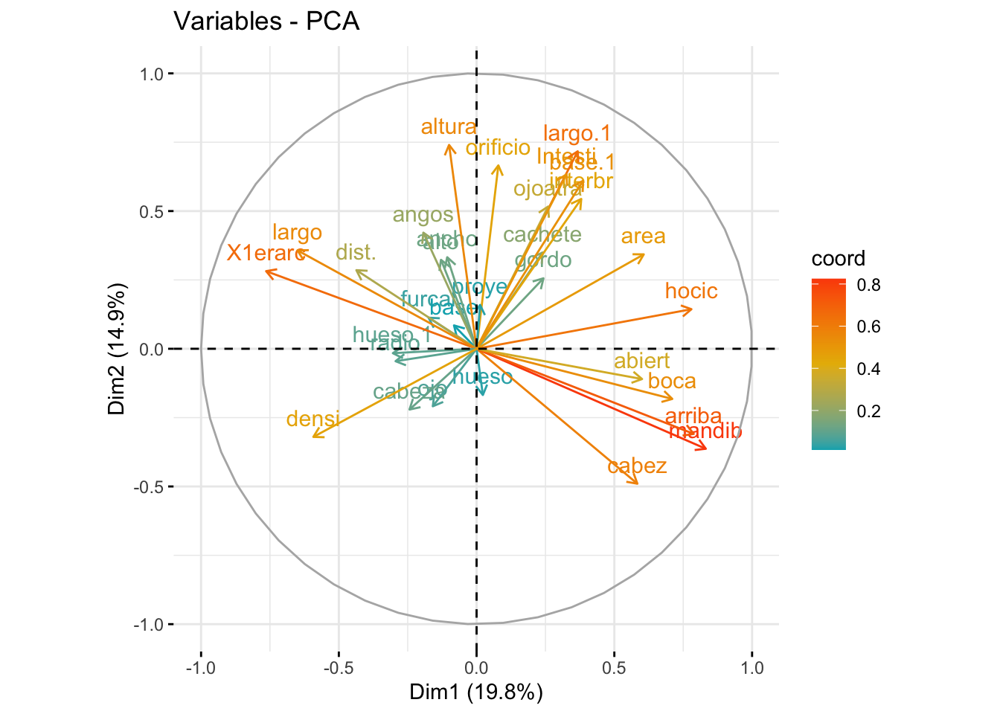 ¿Qué variables son las más importantes? Otra forma de ver estos resultados es utilizando la librería corrplot:
library(corrplot)
corrplot(var$coord, is.corr = T)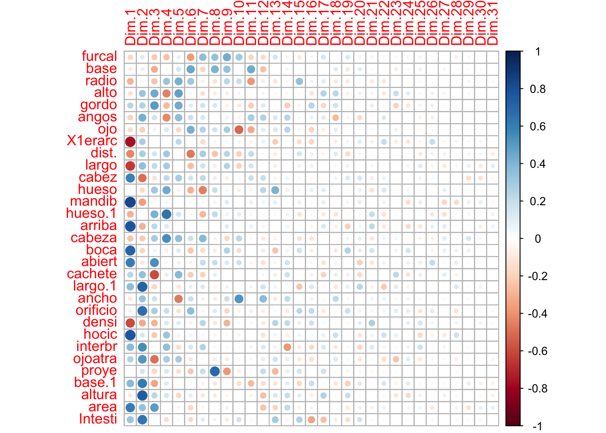 Podemos extraer las 4 variables más importantes para un componente dado:
sort(cors[,1], decreasing = T)[1:4]## mandib arriba hocic X1erarc
## 0.83 0.79 0.78 0.76sort(cors[,2], decreasing = T)[1:4]## altura largo.1 orificio Intesti
## 0.74 0.72 0.67 0.63Un efecto secundario de reducir la dimensionalidad es que podemos formar agrupaciones, (otra de las aplicaciones del ACP) tal y como en el caso del NMDS. Podemos ver cómo se distribuyeron los individuos según nuestras agrupaciones originales, tal que:
fviz_pca_ind(res.pca,
geom.ind = "point", # Mostrar solo puntos (sin textos)
col.ind = x1n[,1], # Número de colores (grupos)
palette = c("#00AFBB", "#E7B800", "#FC4E07"), # Colores a utilizar
addEllipses = TRUE, # Elipses de concentración
legend.title = "Especies")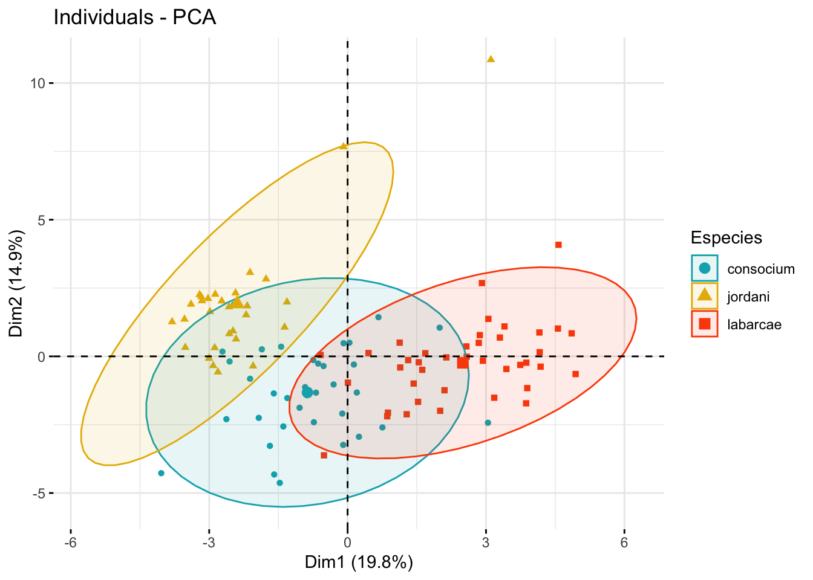 Y podemos también hacer un gráfico conjunto, aunque dada la alta dimensionalidad de esta base de datos, los resultados serán poco interpretables.
fviz_pca_biplot(res.pca,
col.ind = x1n$especie, palette = "jco",
addEllipses = TRUE, label = "var",
col.var = "black", repel = TRUE,
legend.title = "Especies") 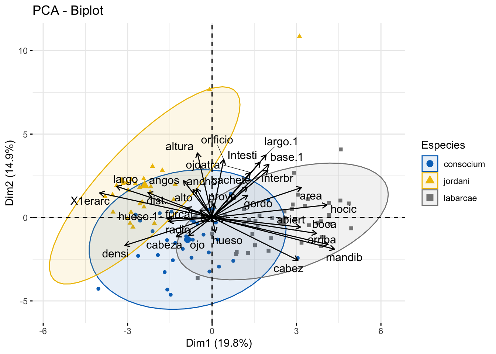 ## Evaluación de los Componentes Principales Veamos ahora las varianzas explicadas acumuladas para cada componente:
eig.val <- get_eigenvalue(res.pca)
eig.val## eigenvalue variance.percent cumulative.variance.percent
## Dim.1 6.14608922 19.8260942 19.82609
## Dim.2 4.63221636 14.9426334 34.76873
## Dim.3 2.80882601 9.0607291 43.82946
## Dim.4 2.27068129 7.3247783 51.15424
## Dim.5 1.68514008 5.4359358 56.59017
## Dim.6 1.55020741 5.0006691 61.59084
## Dim.7 1.26002881 4.0646091 65.65545
## Dim.8 1.10797871 3.5741249 69.22957
## Dim.9 1.05894728 3.4159590 72.64553
## Dim.10 0.96627425 3.1170137 75.76255
## Dim.11 0.84470657 2.7248599 78.48741
## Dim.12 0.75624648 2.4395048 80.92691
## Dim.13 0.72656100 2.3437452 83.27066
## Dim.14 0.62761130 2.0245526 85.29521
## Dim.15 0.52955055 1.7082276 87.00344
## Dim.16 0.51240639 1.6529238 88.65636
## Dim.17 0.45010263 1.4519440 90.10830
## Dim.18 0.39821456 1.2845631 91.39287
## Dim.19 0.37664998 1.2149999 92.60787
## Dim.20 0.35475436 1.1443689 93.75224
## Dim.21 0.30760753 0.9922823 94.74452
## Dim.22 0.28534181 0.9204574 95.66498
## Dim.23 0.26608062 0.8583246 96.52330
## Dim.24 0.20787739 0.6705722 97.19387
## Dim.25 0.19269314 0.6215908 97.81546
## Dim.26 0.16829393 0.5428837 98.35835
## Dim.27 0.14322652 0.4620210 98.82037
## Dim.28 0.13259938 0.4277399 99.24811
## Dim.29 0.10706999 0.3453871 99.59350
## Dim.30 0.07572896 0.2442870 99.83778
## Dim.31 0.05028750 0.1622177 100.00000De todos los resultados anteriores vemos que las primeras dos dimensiones capturan menos del 50% de la varianza total de los datos; por tanto, es conveniente analizar cuántos componentes principales son los óptimos. Una alternativa es realizar el análisis gráfico de la varianza. En este gráfico buscamos un punto de inflexión, el cual indicaría el límite de los PCs representativos.
fviz_eig(res.pca, addlabels = T)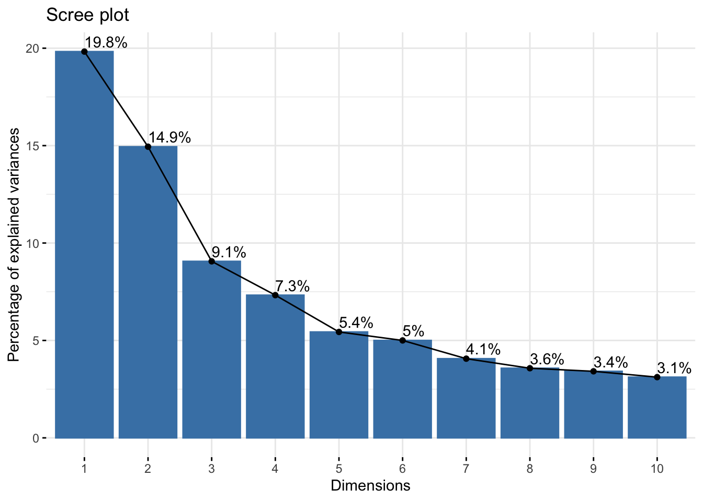 En este gráfico yo consideraría el primer punto de inflexión en el tercer componente principal, pero veamos otros dos criterios. El primero es el criterio de Kaiser-Guttman, en el cual consideraremos los CP cuyas varianzas explicadas sean superiores al valor medio. El segundo modelo es un modelo de repartición de recursos desarrollado en el campo de la ecología: El modelo Broken-Stick (McArthur 1957). En este modelo, el recurso compartido es la varianza total, entonces consideraremos aquellos CPs que contengan una varianza explicada superior a la esperada según el modelo.
#Kaisser-Guttman y Broken Stick
ev <- as.data.frame(eig.val)$eigenvalue
names(ev) <- paste("CP",seq_along(ev), "")
evplot(ev)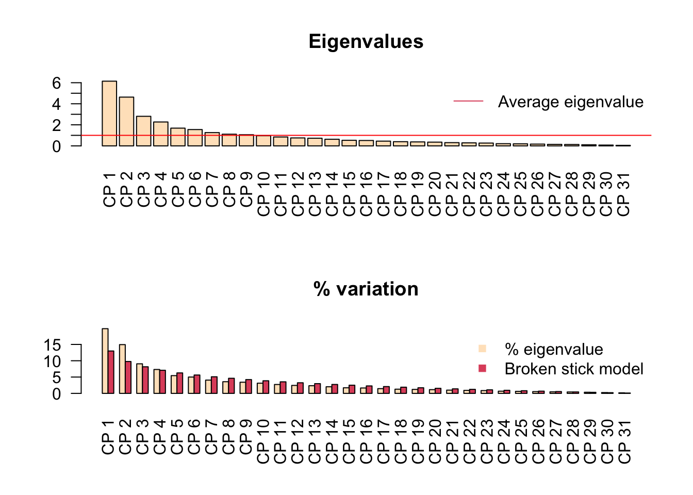 Bajo el criterio de Kaiser-Guttman consideraríamos 8 CPs, mientras que en el modelo de Broken-Stick consideraríamos únicamente 4. De cualquier modo, ambos criterios sugieren un número mayor al que yo consideré en el gráfico de la varianza.
Escalamiento Multidimensional No Métrico (NMDS)
A diferencia del PCA en el cual es importante que las variables estén centradas y estandarizadas (o que las variables sean del mismo tipo; e.g., biometrías en distintas especies de peces), el Escalamiento Multidimensional No Métrico (NMDS) es una técnica más flexible al estar basada en órdenes de rangos (distancias) para la ordenación. Como resultado, puede aceptar una variedad mayor de tipos de datos. Otra diferencia es que en el ACP el objetivo primordial no es la formación de agrupaciones, sino la reducción de la dimensionalidad y la ordenación es una consecuencia del proceso, mientras que en NMDS sí se busca una ordenación.
Para analizar este caso utilicemos los mismos datos del caso sitios (clúster):
# Matriz de distancias
dist.nmds <- dist.mv2
mds <- metaMDS(dist.nmds, distance = "euclidean", k = 2, trace = T)## Run 0 stress 0.1033851
## Run 1 stress 0.1033851
## ... Procrustes: rmse 1.978742e-05 max resid 5.90848e-05
## ... Similar to previous best
## Run 2 stress 0.1033851
## ... Procrustes: rmse 0.0001034217 max resid 0.0003289743
## ... Similar to previous best
## Run 3 stress 0.1033851
## ... Procrustes: rmse 2.031462e-05 max resid 6.432062e-05
## ... Similar to previous best
## Run 4 stress 0.1188198
## Run 5 stress 0.1642917
## Run 6 stress 0.1033852
## ... Procrustes: rmse 0.000156549 max resid 0.0004971714
## ... Similar to previous best
## Run 7 stress 0.1033851
## ... New best solution
## ... Procrustes: rmse 1.531413e-05 max resid 4.788813e-05
## ... Similar to previous best
## Run 8 stress 0.1033851
## ... Procrustes: rmse 2.991831e-05 max resid 8.992686e-05
## ... Similar to previous best
## Run 9 stress 0.1033851
## ... Procrustes: rmse 3.015689e-05 max resid 9.541441e-05
## ... Similar to previous best
## Run 10 stress 0.1033851
## ... Procrustes: rmse 5.621113e-05 max resid 0.0001683602
## ... Similar to previous best
## Run 11 stress 0.1188198
## Run 12 stress 0.1033851
## ... New best solution
## ... Procrustes: rmse 8.814424e-06 max resid 2.799945e-05
## ... Similar to previous best
## Run 13 stress 0.1188198
## Run 14 stress 0.1188198
## Run 15 stress 0.1033851
## ... Procrustes: rmse 1.720723e-05 max resid 5.253055e-05
## ... Similar to previous best
## Run 16 stress 0.1708132
## Run 17 stress 0.1188198
## Run 18 stress 0.1033851
## ... Procrustes: rmse 1.352609e-05 max resid 4.290582e-05
## ... Similar to previous best
## Run 19 stress 0.2047354
## Run 20 stress 0.1033851
## ... Procrustes: rmse 1.263777e-05 max resid 3.973764e-05
## ... Similar to previous best
## *** Solution reachedmds.dims <- data.frame(NMDS1 = mds$points[,1], NMDS2 = mds$points[,2])
mds.plot.data <- cbind(mds.dims, clust.scale)Podemos obtener también la importancia de las variables, de modo análogo a lo que hicimos con el ACP:
# Extraemos los coeficientes de determinación de cada variable con cada dimensión reducida (flechas)
fit <- envfit(mds, clust.scale)
arrow <- data.frame(fit$vectors$arrows, R = fit$vectors$r, P = fit$vectors$pvals)
arrow["Variable"] <- rownames(arrow)
# Extraemos aquellas que tengan una correlación significativamente diferente de 0
arrow.p <- subset(arrow, P <= 0.05)
#Ordenamos de manera descendente según su valor de R2
arrow.p <- arrow.p[order(arrow.p$R, decreasing = T), ]
head(arrow.p)library(ggrepel)
mds.plot <- ggplot(mds.plot.data, aes(NMDS1, NMDS2)) +
geom_point(aes(color = as.factor(res$Best.partition)), alpha = 0.7) +
geom_label_repel(aes(label = rownames(clust.scale))) +
stat_ellipse(aes(fill = as.factor(res$Best.partition)),
type = "t", size = 1, geom = "polygon",
alpha = 0.2, show.legend = F) +
labs(title = "Escalamiento Multidimensional no métrico (NMDS)",
subtitle = paste('Estrés =',round(mds$stress,3)),
caption = "Datos: cluster.txt") +
blank_theme() +
theme(legend.position = "right") + scale_color_discrete(name = "Grupo") #+
#geom_segment(data = arrow.p,
# aes(x=0, y=0, xend = NMDS1, yend = NMDS2, lty = Variable),
# arrow = arrow(length = unit(.25, "cm")*arrow.p$R) #Flechas escaladas según su R^2
# )
mds.plot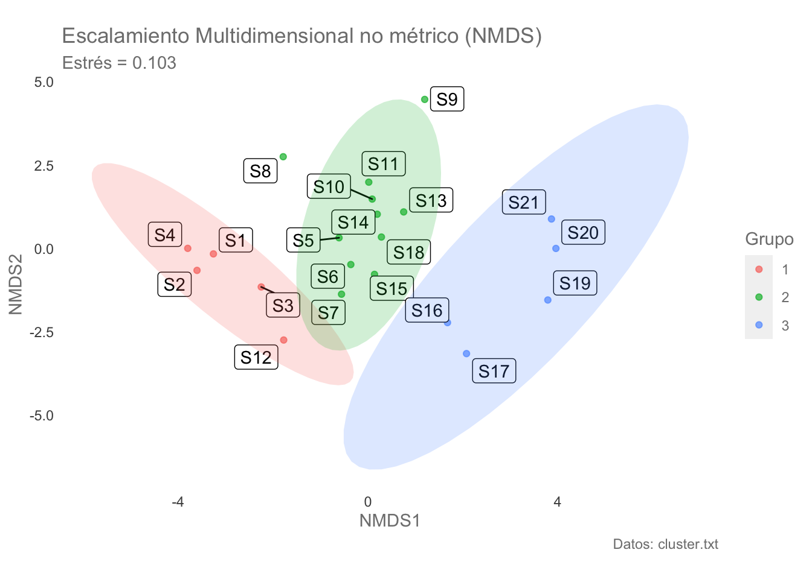 Ahora comparemos con el dendrograma:
ggd2.plotTarea opcional: Aplicar un ACP a esta misma base de datos. 1. ¿Los datos deben de centrarse y estandarizarse? 2. Realiza el ACP. ¿Cuántos CPs considerarías? 3. ¿Cuál es la varianza explicada entre los dos primeros componentes principales? 4. ¿Cuáles son las variables más imporantes para esos dos componentes? 5. ¿Hay diferencias en la ordenación con respecto a los otros dos métodos? 6. Realizar las tres técnicas con las medidas ambientales, incluyendo SST y comparar con estos resultados.